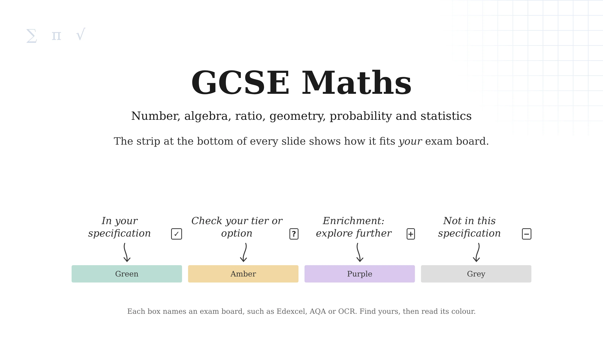
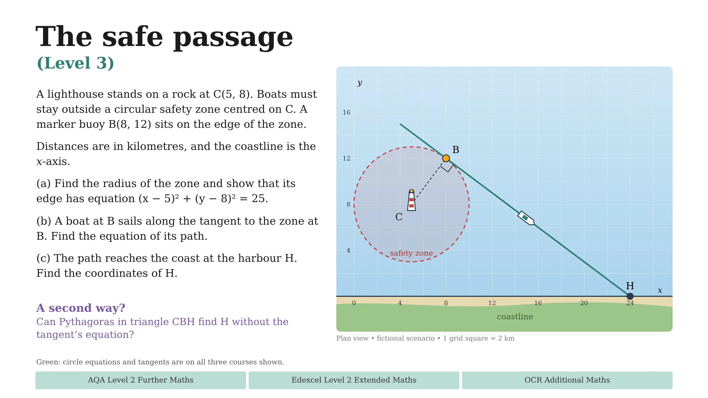

I've marked the exams
As a former examiner, I teach you how marks are awarded, what working to show and where students usually drop them.
One-to-one and small-group lessons for Maths and Further Maths. Online anywhere, or in person in Notting Hill.

Practise on your own between lessons, or use these to see how I teach.
 463 packs
463 packsExam-style questions and worked answers for every topic, sorted by course and exam board.
Find your courseHow to organise your revision so the topics you practise are the ones that need it.
Read the articleWhat to do after a past paper, so each mistake becomes a question you can now answer.
Read the articleOne-to-one or in a small online group, always matched to your exam board. Pick your course to get in touch.

Foundation and Higher: number, algebra, geometry and probability.

Algebra, functions and coordinate geometry, beyond the main GCSE.

Pure, Statistics and Mechanics, with practice choosing the right method.

Core Pure topics like complex numbers and matrices, plus your options.
This is a Level 3 Mechanics problem I use with A-level students. Move the slider and the working updates as you go.
Launched at 30 m/s. The roof is 18 m high and runs from 40 m to 60 m away.
As a former examiner, I teach you how marks are awarded, what working to show and where students usually drop them.
Clear explanation, a worked example, then questions that build in difficulty, all linked to your course.
You'll know what you've understood, which step needs more care, and exactly what to practise next.
Confidence improved significantly within a short period. Explanations were calm, precise and easy to follow, even when the content felt demanding at first.
RARahim Ahmed
A very professional tutor with an obvious depth of preparation. Every lesson felt purposeful, and the written feedback after sessions was especially helpful.
JWJames Williams
Examination preparation became much more focused. Methods were clearer, mistakes were reduced, and confidence in problem-solving improved greatly.
HAHafsa Ali

I studied Mathematics at Loughborough, undertook teacher training in Secondary Mathematics at Brunel, and have taught in classrooms and worked as an examiner.
Now I tutor full time, with thousands of hours of GCSE, A-level and Further Maths behind me.
Tell me your course, exam board and what you'd like help with. I'll reply with availability.